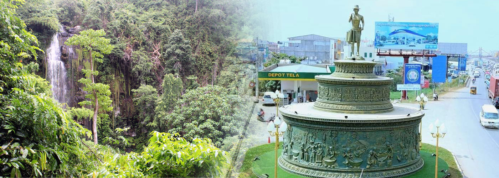

Kampong Speu (Khmer: កំពង់ស្ពឺ, Kâmpóng Spœ [kɑmpɔŋ spɨː]; lit. 'Port of Starfruit') is a province of Cambodia. It borders the provinces of Pursat and Kampong Chhnang to the north, Kandal to the east, Takéo to the southeast, Kampot to the south and Koh Kong to the west. Its capital is the town of Chbar Mon. The Wing Star Shoes factory in Kampong Speu province manufactures Asics sports shoes. It collapsed in 2013.Three people were killed.[4] Workers struck at the Wing Star Shoes Factory in 2014, blocking National Route 3, and demanding a $5 raise in bonuses and enforcement of labor laws.[5] In 2016 and 2018, mass faintings of workers were reported. The cause in 2016, initially attributed to a worker having been possessed by a "spirit," was later revised to "poor health and imagination."2018, police reported that after a worker had a seizure, her "scream caused a mass panic, prompting workers to run, feel dizzy and faint
